Family or Estate Monuments
These monuments typically display a family name and have multiple ledgers, bevel markers, slant markers or flat markers to represent individual members of the family.

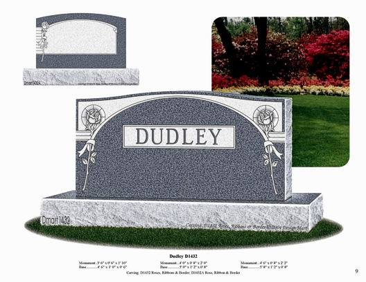
Monuments
Ingram Memorial Company offers a wide variety of monument sizes and styles to suit every cemetery requirement and family budget.
We hope this guide will be helpful in determining which type of monument you are interested in.
These photographs appear on our current Granite page. Select one to look more closely.
Please feel free to visit our Online Catalog & Monument Designer to browse our extensive catalog of designs that may be customized for you and your loved ones. You may also try your hand at designing your own. Please contact any time you have questions or if you'd like assistance in selecting or designing a monument.
These monuments typically display a family name and have multiple ledgers, bevel markers, slant markers or flat markers to represent individual members of the family.

These monuments typically have inscription panels on the face of the monument for individuals.
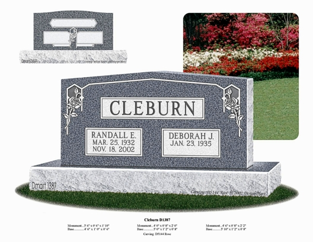
These monuments are typically smaller and are ideal for individuals. It is possible to place inscriptions on one of these monuments for two individuals, however space may be limited.
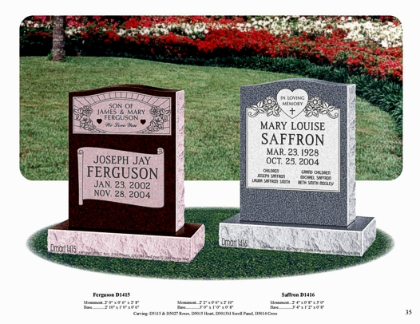
These monuments may be used for Family or Estate monuments, Individual Monuments or Companion monuments depending on the arrangment of the inscriptions and placement of markers or ledgers for individuals. It is also a nice way to feature a vase for flowers.
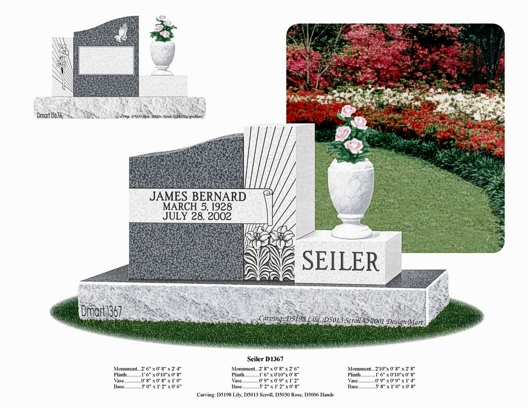
These are popular companion style monuments and present a nice opportunity for a flower vase.
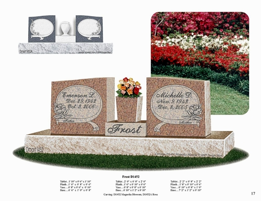
These are called Slants due to the slanted face. This face makes the monument easier to read as a visitor approaches the grave from a distance. These are available in single and double sizes.
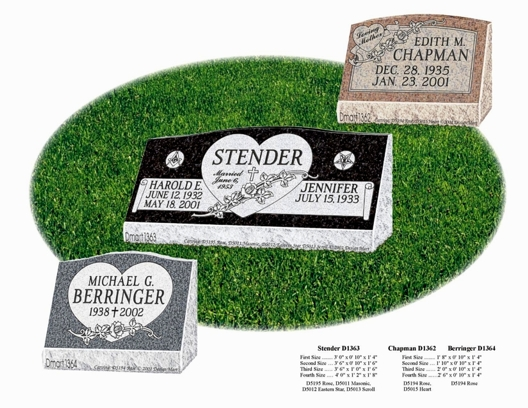
These are called Bevels because of the bevelled or slanted face of the marker. This makes the monument easy to read when standing at the foot of the grave site.
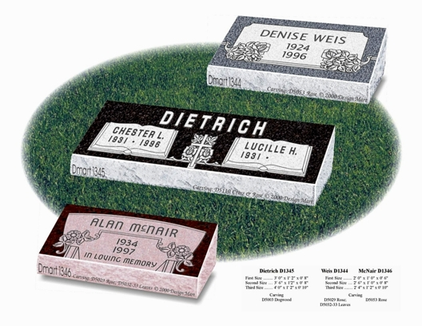
These are also called Grass Markers or Flush Markers because the are flat or flush agains the grass at the grave site.
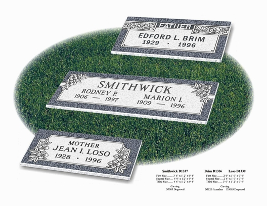
Grave Ledgers, also called Covers, are ideal for use with Family or Estate monuments where individual graves need to be marked. These offer ample room for inscriptions and dates.
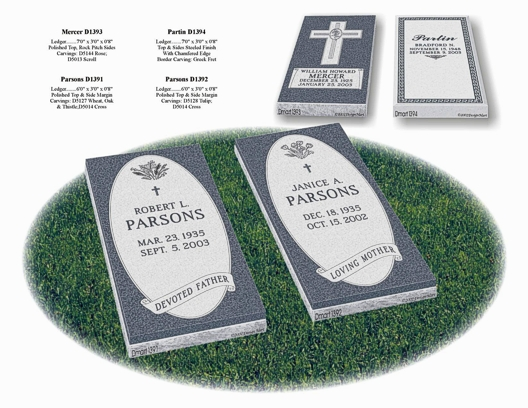
Etchings are typically placed on black stones and may be created by hand with a diamond tipped tool or with the use of a laser. Etchings may be high contrast black and white, or they may be in color.
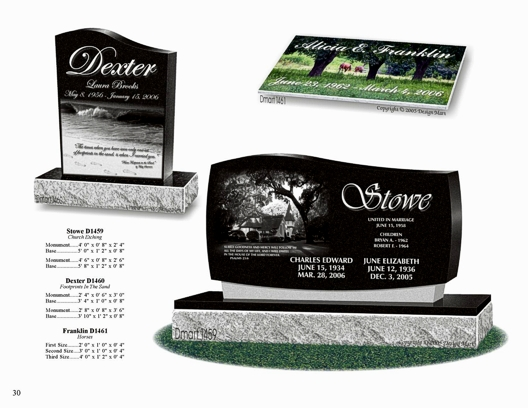
Benches are an ideal way to remember a loved on in a non-traditional setting such as a courtyard or other public area. Some cemetery lots may be large enough to allow a bench.
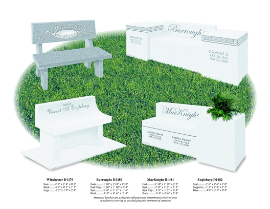
These may be large enough to walk into and may provide room for one to twelve spaces depending upon the size.
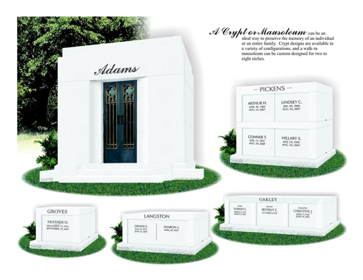
Most all monuments may be fitted with a cored space in the monument or base for storage of cremains. Some monuments, however, are specially designed for cremains. The small cremation bench and the larger columbarium shown below are examples of just two alternatives.
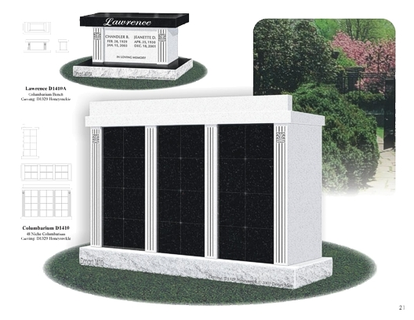
Designs shown (C) Design Mart 1968-2012 and are used with permission of Design Mart, License Number 033012.